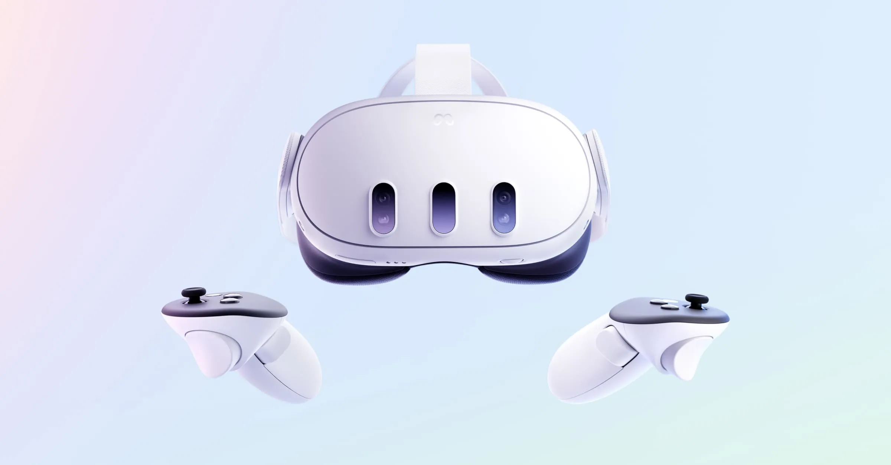

1. 시스템 구조와 입력 계약
1.1 Application Architecture: One Sample, Separate Responsibilities
기존 XR 연동에서는 컨트롤러의 위치·방향을 로봇의 상대 pose 목표로 바꾸고 squeeze 입력으로 조작을 활성화했습니다. 여기에 thumbstick 이동, trigger 그리퍼 조작, A/B/X/Y 버튼 동작을 추가했습니다. SpaceMouse와 비슷하게 손가락으로 위치를 미세 조정하되, XR 컨트롤러를 SpaceMouse의 6축 입력으로 복제하는 작업은 아니었습니다.
실제 검증에는 Meta Quest 3와 Pico 계열 기기를 사용했습니다. 이 페이지의 담당 범위는 기존 OpenXR 입력을 이용한 joystick·trigger·button 응용과 회귀 수정입니다. HMD tracking 알고리즘을 새로 개발한 업무는 아닙니다. 장치의 tracking 원리와 Linux/OpenXR bridge는 장치별 동작 원리, Linux Vive Tracking, Docker·장치 연동에서 별도로 다룹니다.
OpenXR session worker가 pose·axis·button과 유효성 정보를 만듭니다. RobotWorker는 장치 binding을 해석해 pose와 조그를 합성하고, 그리퍼는 해당 로봇·팔에 연결된 도구로 보냅니다. 버튼은 수집·모드 전환 서비스로 전달합니다. 물리 입력을 읽는 책임과 수집을 시작해도 되는지 판단하는 책임을 분리한 구조입니다.
이 과정에서 HW package가 application의 API route를 직접 import하도록 만들지 않았습니다. RobotRuntimeBridge의 인터페이스를 통해 application 구현을 호출하고, application 쪽에서 기존 수집·모드 전환 경로를 재사용했습니다. 이 인터페이스 자체가 별도 프로세스나 네트워크 통신이라는 뜻은 아닙니다. Host/container 간 OpenXR snapshot 전달 구조는 아래 Related Records의 Docker·장치 연동에서 별도로 설명합니다.
1.2 Input Contract: Pose, Axis, Button and Activity Are Different

Pose·thumbstick·trigger·squeeze·button을 함께 다루는 입력 장치입니다. Meta의 공식 제품 외형 참고 사진입니다.
| 신호 | 표현·단위 | 응용에서의 역할 |
|---|---|---|
| Controller position / orientation | 위치 m, quaternion [x,y,z,w] | 조작 기준에서의 상대 이동·회전 |
| Thumbstick X/Y | 축별 −1…1, 무차원 | 선택한 robot base 축의 속도 입력 |
| Trigger / squeeze | 통상 0…1, 무차원 | 그리퍼 fraction / pose 조작 gate |
| Primary / secondary click | boolean | 수집·모드 전환의 누름 edge |
| input_active / pose_valid | 입력원 활동 / pose 유효성 | 값 0과 입력 부재를 구분 |
| Session / profile / timestamp | focus·연결·interaction profile·시간 | sample을 해석할 실행 맥락 |
OpenXR의 Boolean·Float action state는 현재 값과 isActive를 별도로 제공합니다. Boolean의 changedSinceLastSync는 runtime 동기화 사이의 변화를 나타냅니다. MiMicX에서 버튼을 한 번만 실행하기 위해 관리한 이전 누름 상태는 이 필드와 별개의 application edge 처리입니다.[XR-BOOL][XR-FLOAT][XR-POSE]
Pose action이 활성이라는 것과 유효한 위치·방향을 얻었다는 것도 다릅니다. 따라서 하나의 connected 표시로 모든 입력 경로를 정상으로 취급하지 않았습니다. 반대로 pose가 필요 없는 버튼 동작에 로봇 기준 pose까지 요구하면, 연결된 컨트롤러의 버튼도 처리하지 못하게 됩니다.[XR-BOOL][XR-FLOAT][XR-POSE]
1.3 Runtime Gates: Focus, Profile and Pico Fallback
응용에서 사용할 sample은 연결 상태, FOCUSED session, 손 컨트롤러 발견 여부와 interaction profile을 먼저 구분했습니다. pose 목표를 만드는 분기에서는 pose_valid도 확인합니다. 버튼만 읽는 분기나 thumbstick만으로 이동하는 분기에 같은 pose 조건을 무조건 복사하지 않았습니다.
| 상태 | 판정 | 이유 |
|---|---|---|
| Axis가 active | 실제 axis 값과 threshold 비교 | active인데 0이면 놓은 상태 |
| Axis inactive, click active | click으로 정규화한 값 사용 | analog 대신 제공되는 digital 입력 활용 |
| Axis·click 모두 inactive | 설정된 Pico pose fallback 적용 | profile에서 gate 입력을 못 받는 경우 분리 |
| 연결·focus·profile 조건 실패 | 동작 경로 중단·기준 상태 초기화 | 이전 sample의 조작 기준을 이어 쓰지 않음 |
Click만 들어오는 장치 경로에서는 해당 click이 true이고 analog 값이 0 이하일 때 axis 값을 1로 보완했습니다. 이것은 끝점 입력을 대신하는 호환 처리이지, 누락된 연속 압력을 복원한 것이 아닙니다. input_active 정보는 따로 남겼습니다. 특히 active axis의 0을 “값이 안 들어온다”로 해석해 fallback을 켜면, 손을 놓아도 조작이 활성화되는 잘못된 gate가 됩니다.
Pose gate에는 disabled·pose·hold·toggle의 구분이 있습니다. hold는 누르는 동안, toggle은 누름 edge마다 활성 상태를 바꿉니다. 기본 hold source는 squeeze axis이고 threshold는 0.35입니다. Pico fallback은 이 설정과 profile별 실제 입력 가용성을 함께 해석하는 보완 경로입니다.
2. Pose·thumbstick 입력 합성
2.1 Regression: Thumbstick Replaced Pose Instead of Extending It
처음 planar XY 조그를 붙였을 때 thumbstick 경로에서 목표를 바로 반환했습니다. 이 early return 때문에 기존 pose 계산을 지나지 않았습니다. Stick을 중립에 두고 컨트롤러를 움직여도 로봇 목표가 갱신되지 않았고, squeeze 기반 조작이 사라진 것처럼 보였습니다. 문제는 tracking을 못 읽은 것이 아니라 읽은 pose가 최종 목표 계산에 참여하지 못한 것이었습니다.
수정은 기존 pose 목표를 먼저 구한 뒤 누적 조그 offset을 더하는 방식이었습니다. 이 수정 후 squeeze pose 조작이 다시 동작하는 것을 확인했습니다. 이어 thumbstick은 squeeze를 누르지 않아도 사용할 수 있게 분리했습니다. 단, 로봇은 이미 TeleT 실행 상태여야 합니다. Idle 버튼 감시를 추가했다고 Idle에서 조그 명령까지 보내는 구조로 확장하지 않았습니다.
2.2 Relative Translation: Controller Reference to Robot Base
조작을 시작할 때 현재 로봇 pose와 현재 컨트롤러 pose를 기준으로 잡습니다. 컨트롤러의 공간 절대 좌표를 로봇에 그대로 보내지 않고, 이 기준 이후의 변위를 calibration basis로 변환합니다. 로봇 위치는 mm, 컨트롤러 위치는 m이므로 단위 변환도 이 경계에서 명시됩니다.
| 기호 | 의미 | 단위 |
|---|---|---|
| p_r0 | 조작 시작 시 robot base 위치 | mm |
| x, x_0 | 현재·기준 XR 위치 | m |
| C | XR basis에서 robot base로의 회전 변환 | 3×3 회전행렬 |
| s_p | 이동 배율 | 무차원 |
C는 축 방향을 맞추는 회전입니다. 상대 위치 x−x₀를 먼저 구하므로 이 식에 공간 원점의 절대 translation을 다시 더하지 않습니다. Controller reference와 robot base reference를 함께 잡는 이유는 사용자가 조작을 재개할 때 로봇이 컨트롤러의 절대 위치로 점프하지 않도록 하기 위해서입니다.
2.3 Relative Rotation: Basis Conversion and Angular Deadzone
컨트롤러 quaternion은 [x,y,z,w] 순서로 회전으로 변환합니다. 기준 XR 회전에 대한 상대 회전을 구하고 rotation vector로 바꾼 뒤 작은 각도 변화를 제거합니다. Euler angle 세 성분을 각각 빼서 회전 차이를 계산하지 않았습니다.
Log는 회전을 rad 단위 rotation vector로, Exp는 그 반대 방향으로 바꿉니다. Dθ는 벡터 길이가 θ 이하이면 0, 초과하면 방향을 유지한 채 길이에서 θ를 뺍니다. 기본 각도 deadzone은 5°를 rad으로 바꿔 사용합니다. B는 XR 기준 자세에서 표현된 회전축을 로봇 기준 자세의 표현으로 옮기는 basis입니다.
마지막에 목표 회전을 로봇 명령용 RPY degree로 인코딩합니다. 입력 quaternion, 중간 rotation vector, 출력 RPY는 같은 물리 회전을 서로 다른 표현으로 다루는 단계입니다. 단순히 “컨트롤러의 세 각도를 로봇에 더한다”로 설명하면 calibration과 기준 자세가 사라집니다.
2.4 Axis Mapping, Deadzone and Time Integration
초기 조그는 base XY 이동이었지만 현재 설정은 stick X·Y 각각을 robot base X/Y/Z 또는 None에 배정하는 axis_map입니다. 컨트롤러가 바라보는 방향이나 tool frame을 따라가는 축이 아닙니다. 방향 기준을 바꾸려면 단순히 axis 이름만 바꾸는 것으로 해결되지 않습니다.
s는 −1…1로 제한하고 d는 0…0.95로 제한합니다. 기본 d=0.20에서 |s|=0.20까지는 0, |s|=0.60이면 |u|=0.50입니다. A는 선택된 robot base 단위축을 두 열로 갖는 3×2 mapping입니다. None 열은 0이고, 두 stick 축을 같은 로봇 축에 배정하면 기여가 합쳐집니다.
v의 기본값은 50 mm/s입니다. 첫 sample이나 증가하지 않는 timestamp에서는 control period 0.02 s를 쓰고, 증가한 sample 간격은 최대 0.25 s로 제한합니다. 이 상한은 긴 간격을 한 번에 큰 이동으로 적분하는 것을 제한합니다. 실제 주기가 항상 50 Hz라는 측정 결과나, 지연을 보상한다는 의미는 아닙니다.
속도 제한은 축별 처리입니다. 서로 다른 두 축을 최대 입력하면 합성 속력은 √2·v가 되고, 같은 축에 배정하면 값이 더해질 수 있습니다. 따라서 v를 무조건 Cartesian 전체 속력의 상한으로 설명할 수 없습니다. 조작 감도를 정할 때에는 축 배정과 동시 입력도 함께 봐야 합니다.
2.5 Release: Reset the Reference, Not Only the Offset
누적 offset은 조그를 누른 동안만 의미가 있는 가상 이동량입니다. Stick이 중립이 되었다고 offset만 0으로 만들면, 이전에 저장한 robot reference가 그대로 남아 목표가 과거 기준으로 돌아갑니다. 조그 종료 시 현재 로봇 pose를 새 base로, 현재 controller sample을 새 device reference로 잡고 offset을 초기화했습니다.
이때 반환하는 목표도 현재 로봇 pose입니다. Stick-only 조그에서는 기준 자세의 RPY를 유지합니다. Focus가 끊기거나 연결 조건이 실패할 때에도 조작 reference를 초기화합니다. 입력의 종료는 값 하나를 0으로 바꾸는 일이 아니라, 다음 상대 명령이 시작될 좌표 기준을 정하는 일이었습니다.
2.6 Configuration: New Defaults and Legacy Behavior
| 항목 | 현재 동작 | 호환 처리 |
|---|---|---|
| Motion mode | axis_map | planar_xy / xy / base_xy를 axis_map으로 정규화 |
| Stick axis | 새 등록은 X·Y 모두 None | 이전 planar 모드의 미지정 축: stick X→robot Y, stick Y→robot X |
| 과거 params에 motion mode 없음 | 기존 설정 정규화 시 disabled | 기존 장치에서 조그를 뜻하지 않게 켜지 않음 |
| Primary / secondary action | None | 초기 start/stop 제안과 최종 기본값을 구분 |
| Pose / gripper | squeeze hold / trigger analog | 별도 binding의 source·threshold 사용 |
Configuration의 등록 화면에 항목을 추가하는 것만으로는 충분하지 않았습니다. 이미 등록된 장치 카드에서도 값을 편집하고, 저장한 params를 runtime binding으로 넘기는 sync 경로에 새 필드가 포함되어야 했습니다. 화면에서 선택한 값, 저장된 값, worker가 실제 받은 값은 서로 다른 확인 지점입니다.
축은 UI와 backend에서 같은 허용값으로 정규화하고 저장합니다. 명시적인 새 binding과 legacy 제어를 함께 적용해 한 버튼이 배율 조절과 그리퍼 동작을 동시에 일으키지 않도록, 과거 menu/grip 기반 배율 변경은 legacy contract 경로에 남겼습니다.
3. 그리퍼 제어
3.1 Analog Gripper: Fraction to Tool Command
Trigger fraction f를 0…1로 제한하고 도구의 open·close 설정 사이를 보간합니다. 이 명령 경로는 정수 위치를 0…1000 범위로 제한합니다. 예를 들어 open=1000, close=0이면 f=0.30은 위치 명령 700이 됩니다. 이 수치는 그리퍼 opening width의 mm나 손가락 관절 각도가 아니라 해당 명령 경로의 위치 표현입니다.
도구 종류와 open/close·force 설정은 application bridge를 통해 구합니다. 필요한 도구에서는 force 설정 명령을 먼저 보내고 위치를 보냅니다. 이것을 힘 센서 피드백으로 닫힘을 조절하는 force control로 설명하지 않았습니다. 여기서 추가한 것은 입력 fraction과 기존 그리퍼 명령 사이의 연결입니다.
3.2 Owner Resolution and Digital Modes
같은 장치 타입이 양쪽에 있다고 해서 입력을 모든 그리퍼에 broadcast하지 않습니다. Binding의 robot·arm 소속으로 도구를 찾고, 소속이 모호하거나 도구가 없으면 명령을 생략합니다. Logical left/right는 컨트롤러 side이고, 어느 로봇·팔을 조작하는지는 binding의 owner입니다.
| 모드 | 시간적 동작 | 확인할 항목 |
|---|---|---|
| Analog | fraction을 연속 위치로 변환 | 중간 trigger 값에서 중간 위치 명령 |
| Hold / binary | threshold 통과·해제에 따라 open/close | threshold와 눌림/해제 전환 |
| Toggle | 누름 edge마다 open/close 변경 | hold 중 반복 토글하지 않음 |
| Click fallback | axis가 없을 때 0 또는 1 끝점 | 연속 강도와 같은 의미로 해석하지 않음 |
표시용 마지막 action이 open/close 범주라고 해서 실제 analog 명령이 이진값인 것은 아닙니다. 정상 여부는 UI의 라벨뿐 아니라 전달되는 fraction, owner와 최종 위치 명령을 함께 보아야 했습니다.
4. 버튼·수집·모드 제어
4.1 Robot mode × recording: 두 상태를 독립적으로 유지
| Action | 조건·참조 대상 | 동작의 경계 |
|---|---|---|
| None | 등록·미설정 기본값 | 의도하지 않은 수집·mode 변경 방지 |
| Collect start | Collect 화면의 현재 task와 기존 preflight | 기록 시작. TeleT로 강제 전환하지 않음 |
| Collect stop | 현재 collection session | 기록 정지 후 대상 robot을 Idle로 |
| Robot TaskTeleop | Idle에서 기존 backend transition | button-only loop에서 pose motion 직접 실행 안 함 |
| Robot Idle | 저장 mode와 live op-state 참조 | 필요한 stop_teleop을 실제 호출 |
수집과 운전 mode를 분리했기 때문에 start 성공을 로봇 동작 허가와 혼동하지 않습니다. 한편 stop은 파일을 닫는 데 그치지 않고 collection session 참여 로봇을 안전 상태로 돌리는 의미가 있습니다. Start와 stop이 완전히 대칭이 아닌 이유는 운용상의 의미가 다르기 때문입니다.
Idle의 button 분기에서도 CONNECTED·FOCUSED·hand_found·interaction profile을 확인합니다. Pose 유효성과 base pose는 button-only 동작의 필수 조건으로 만들지 않습니다. Motion 허용 조건을 느슨하게 하는 대신 mode 변경 intent를 읽는 조건을 따로 설계했습니다.
4.2 Button Actions: Edge Detection Instead of Repeated Commands
Primary/secondary와 A/X·B/Y alias를 정규화한 후, binding과 action 필드별로 이전 눌림을 저장합니다. 값이 true인 모든 tick에 수집 시작을 요청하지 않고 false→true에서 한 번 dispatch합니다. 기본 action은 None이고 사용자가 collect start/stop 또는 Idle/TeleT를 선택합니다.
버튼 처리는 robot base pose나 pose_valid에 의존하기 전에 수행합니다. 또한 motion reference를 정리할 때 버튼의 이전 누름 상태까지 매번 지우지 않습니다. 이 상태를 지우면 버튼을 계속 누르고 있어도 다음 tick에 새 edge처럼 인식하기 때문입니다.
4.3 Capture Actions: Reuse the Existing Start Path
처음에는 Configuration에서 button_collect_task를 미리 입력하도록 했습니다. 하지만 장치를 등록할 때 task가 아직 없을 수 있고, 수집 화면에서 실제로 선택한 task와도 어긋났습니다. 현재 수집 화면의 task 선택을 backend collector 상태로 전달하고 버튼 시작이 그 task를 쓰도록 연결했습니다. 비어 있지 않은 과거 button_collect_task는 legacy override로 남았습니다.
Task가 없으면 시작하지 않습니다. 이미 기록 중이면 중복 시작을 생략하고, 저장 여부 결정을 기다리는 상태에서는 새 수집을 거부합니다. 준비된 task라도 기존 collect start와 preflight를 통과해야 합니다. 컨트롤러 버튼을 추가했다는 이유로 카메라·로봇 구성이나 수집 준비 검사를 우회하지 않았습니다.
Collect start는 현재 로봇 모드를 보존합니다. 버튼으로 수집을 시작할 때 매번 TeleT로 강제 전환하면 로봇의 현재 운전과 충돌합니다. 수집 제어와 로봇 운전 모드 제어는 서로 연결되지만 같은 동작이 아닙니다.
4.4 Capture Stop: Cleanup and Idle Are Part of the Operation
개발 중에는 stop에서도 기존 모드를 유지하는 중간 수정이 있었습니다. 그러나 수집 종료 후에는 로봇이 계속 teleoperation을 받지 않도록 Idle로 돌아가야 한다는 동작 기준을 적용했습니다. Start는 모드 유지, Stop은 안전 종료 후 Idle로 구분했습니다.
버튼 stop은 기존 수집 stop 경로로 들어가 기록 정리를 수행하고 session의 대상 robot order/IDs를 따라 Idle 전환을 처리합니다. 화면에서 현재 선택한 로봇 하나만 보고 정리하지 않습니다. 이미 기록 중도, 종료 처리 중도 아니면 중복 stop을 생략합니다.
이 경로는 단순히 UI 상태를 Idle로 바꾸는 것이 아닙니다. 실제 teleoperation을 멈추는 backend 동작까지 이어져야 합니다. 수집 artifact 정리와 실제 로봇 명령 중단을 한 번의 버튼 이름 안에 뭉개지 않고 각각 추적했습니다.
4.5 Idle Polling: A Mode-Entry Button Cannot Depend on That Mode
기존 버튼 dispatch가 TeleT 실행 분기 안에만 있어 Idle에서는 버튼을 읽지 못했습니다. Idle→TeleT를 컨트롤러로 전환하려는데, TeleT여야만 그 버튼을 처리하는 순환 조건이었습니다. 같은 입력 장치가 화면에 연결되어 보여도 이 조건 때문에 아무 일도 일어나지 않았습니다.
TeleT 바깥에서도 연결·focus·손 발견·profile 조건을 만족하면 버튼 상태만 감시하도록 분리했습니다. 여기서는 pose 목표나 그리퍼 명령을 만들지 않습니다. robot_task_teleop은 현재 유효 모드가 Idle일 때, robot_idle은 TeleT일 때 application의 기존 전환 경로로 요청합니다. 다른 상태에서는 이유가 있는 skip 결과를 반환합니다.
이 수정에서 중요한 것은 모든 모드에서 모든 조작을 허용한 것이 아니라 명령을 인식하는 조건과 그 명령을 실행해도 되는 조건을 분리한 점입니다. 입력 감시는 더 넓게 열되, 실제 운전 전환의 판단은 backend에 유지했습니다.
4.6 Stored Mode vs Live Operation State
버튼이 전달된 뒤에도 저장된 mode는 Idle인데 실제 로봇 operation state가 TeleT인 경우 Idle 요청이 이미 Idle이라는 이유로 생략될 수 있었습니다. 문자열 상태만 보고 아무 일도 할 필요가 없다고 결론 내리면 실물은 계속 TeleT에 남습니다.
| 입력 상태 | Application 판단 | 실제 처리 |
|---|---|---|
| 저장 Idle, live op=17 | TeleT로 해석 | Idle 요청 시 실제 teleop 중단 |
| 저장 TeleT, live op≠17 | 이 전환 helper에서 Idle로 해석 | TaskTeleop 요청 여부를 현재 상태 기준으로 판단 |
| TeleT에서 Idle 요청 | 전환 요청 허용 | 기존 backend 전환·중단 경로 실행 |
| 이미 목적 모드 또는 부적합 상태 | 구조화된 skip | 불필요한 반복 명령을 보내지 않음 |
Idle 처리에서는 저장 mode가 TeleT이거나 live op=17이면 stop teleop을 실행하도록 연결했습니다. op=17은 이 통합에서의 Task Teleoperation 상태입니다. 전환 직전에는 저장된 문자열뿐 아니라 live snapshot을 대조하고, 실제 명령을 중단하는 경로까지 이어지는지 확인해야 했습니다.
5. 디버깅·검증·설계 판단
5.1 UI→저장→binding→worker: 설정이 도착하는 경로
등록 dialog에서 action을 선택해도 저장 params가 runtime binding에 동기화되지 않으면 button은 동작하지 않았습니다. 등록 화면뿐 아니라 등록 후 device card의 편집·저장 경로를 만들고, 다시 읽은 값을 worker가 해석하는 곳까지 확인했습니다. UI 선택 상태를 backend의 유효 설정과 같은 것으로 보지 않은 수정입니다.
Task 선택도 장치 등록 설정에 고정할 정보가 아니었습니다. 등록 시점에는 나중에 어떤 task를 수집할지 정하지 않을 수 있습니다. Collect 화면의 현재 task를 backend가 관리하고 button의 start intent에서 기존 preflight를 통과하도록 했습니다. Device mapping의 수명과 현재 수행할 task의 수명을 분리했습니다.
옛 planar_xy 설정은 현행 axis_map으로 호환 해석하고, 명시 axis가 없는 옛 설정에서는 stick X→base Y, stick Y→base X를 유지합니다. XYZ/None 지정을 추가할 때에도 기존 설정을 읽었다는 이유로 조작 방향이 바뀌지 않도록 했습니다.
5.2 Debugging Sequence: Follow Values Across Ownership Boundaries
| 증상 | 구분한 원인 | 수정·회귀 확인 |
|---|---|---|
| 중립 stick에서 pose 이동이 사라짐 | 조그 early return이 pose 경로 우회 | pose 계산 뒤 offset 합성, neutral pose 유지 |
| 등록 후 action을 바꾸기 어려움 | 등록 dialog만 존재 | 장치 카드 편집·저장 추가 |
| 선택한 action이 실행되지 않음 | params sync에서 필드 누락 | 저장→runtime binding 전달 보강 |
| task를 등록 화면에서 미리 요구 | 설정과 수집 시점의 수명 차이 | Collect 선택 task를 backend 상태로 전달 |
| 수집 start가 모드까지 바꿈 | 수집과 운전 상태 결합 | start preserve mode, stop Idle 분리 |
| Idle에서 TeleT 버튼 무반응 | 버튼 읽기가 TeleT 내부에만 존재 | 비 TeleT에서는 버튼 전용 polling |
| Idle 요청 후 실제 TeleT 유지 | stored mode와 live op 불일치 | effective mode·실제 stop teleop 경로 보강 |
같은 “버튼이 안 된다”도 action 설정 누락, task 선택 부재, worker 분기 미진입, 상태 불일치가 다른 원인이었습니다. 그래서 UI 버튼을 고친 뒤 끝내지 않고 저장 params, binding, sample edge, application 호출, 실제 운전 전환 순으로 경계를 나눴습니다. 한 구간에서 정상이라는 사실을 다음 구간의 정상으로 대신하지 않았습니다.
5.3 테스트와 서버가 수정한 코드를 실행하는지 확인
디버깅 중 editable install이나 PYTHONPATH 때문에 수정한 checkout과 테스트·server가 읽는 코드가 달라지는 문제도 있었습니다. 화면 증상이 바뀌지 않는다고 즉시 입력식을 다시 고치기보다, 대상 server와 import 위치가 의도한 버전인지 먼저 맞췄습니다.
| 관찰 대상 | 구분하는 것 |
|---|---|
| Controller sample | 값 0과 inactive, focus/profile/pose 유효성 |
| 저장 params·binding | UI 선택이 worker까지 도착했는가 |
| 최종 target | pose·jog 합성, 단위·basis·re-anchor |
| Application 호출 | button edge가 의도한 action에 도착했는가 |
| 실제 robot 상태 | stored Idle과 live TeleT의 차이 |
| 실행 코드 위치 | 수정본 server/import를 사용 중인가 |
개발 기록의 테스트 건수는 버전과 대상 slice가 달라 단순히 누적할 수 없습니다. Fixture의 입력·기대값과 수정 후 실기에서 확인한 동작을 구분하고, 실행 코드의 위치까지 맞춘 뒤 결과를 해석했습니다.
5.4 Verification: What Each Check Establishes
| 검사 | 입력·조건 | 기대하는 결과 |
|---|---|---|
| Pose + axis jog 합성 | base [100,200,300], v=100 mm/s, dt=0.1 s | 첫 목표 [110,200,300], 다음 pose 변위+조그 [210,210,300] |
| Z axis mapping | 선택 축 Z, 10 mm 적분량 | Z만 10 mm 증가 |
| Stick-only / neutral pose | squeeze false / deadzone 안의 stick | TeleT의 stick 조그 가능 / pose 이동은 유지 |
| Release re-anchor | 현재 pose [12,34,56,1,2,3] | 다음 neutral에서도 현재 기준 유지 |
| Rising edge | True, True, False, True | application 호출 두 번 |
| 버튼과 pose 분리 | base pose 없음, A alias 입력 | button dispatch 가능 |
| Idle polling | 비 TeleT worker, TaskTeleop action | 모드 전환 bridge 호출 |
| Live mode 우선 확인 | stored Idle, live op=17 | Idle 전환에서 실제 teleop 중단 |
| Pico gate | active axis=0 / inactive axis·click | 실제 release 유지 / 설정된 fallback 구분 |
이 표의 좌표와 호출 횟수는 mock fixture의 입력·기대값입니다. Pose와 jog의 합성, edge 횟수, owner와 모드 전환 경로를 검사합니다. 실물에서는 additive 수정 후 squeeze pose 조작의 복구를 확인했습니다. Tracking 정확도는 이런 mock 검사와 별도의 측정 대상입니다.
실행을 확인할 때에는 연결 표시, 입력값 변화, 최종 target, 그리퍼 owner와 위치 명령, 수집 상태, 실제 mode를 나눠 관찰해야 합니다. 특히 수집 시작 성공만으로 버튼 stop의 Idle 전환까지 검증했다고 판단할 수 없습니다.
5.5 Engineering Note: Extend Behavior Without Changing Its Meaning
Thumbstick을 붙이고 pose 조작이 사라졌을 때, 새 기능을 추가하는 것과 기존 동작을 보존하는 것은 별도의 설계 문제라는 것을 배웠습니다. 두 입력을 모두 읽어도 최종 목표를 만드는 식에서 하나가 빠지면 기능 확장이 아니라 대체가 됩니다. 이후에는 입력별 역할과 합성 위치, 종료 후 기준 좌표까지 먼저 정의하게 되었습니다.
Idle 버튼 문제는 상태가 구현의 편의가 아니라 명령의 의미를 결정한다는 것을 보여줬습니다. TeleT 진입 버튼을 TeleT 안에서만 처리하거나, 저장된 Idle을 실제 Idle로 믿으면 정상적인 호출도 실물 동작으로 이어지지 않습니다. 입력 인식, 실행 허용, 실제 상태 확인을 나누고 각 책임이 같은 판단을 공유하도록 연결해야 했습니다.
또한 bool과 float, 값 0과 inactive, task 설정과 현재 선택처럼 비슷해 보이는 정보의 차이가 실제 오동작을 만들었습니다. 단순히 타입을 맞추는 것보다 값의 의미와 소유자, 수명이 어디까지 유지되는지를 맞추는 일이 장치 응용 개발의 핵심이라고 이해했습니다.
References
- [XR-BOOL] Khronos — XrActionStateBoolean
currentState, changedSinceLastSync, isActive의 구분. MiMicX의 local edge와 표준 필드를 혼동하지 않는 기준.
- [XR-FLOAT] Khronos — XrActionStateFloat
현재 float 값과 action 활동 여부의 구분.
- [XR-POSE] Khronos — XrActionStatePose
Pose action의 활성 상태. 위치·방향 유효성과 구분해 해석.